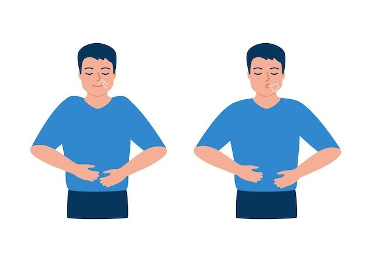
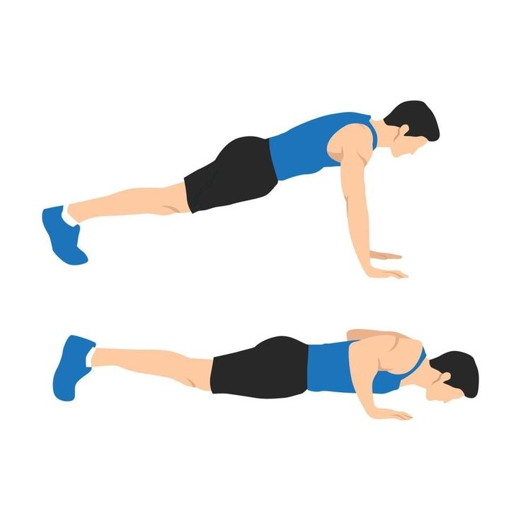
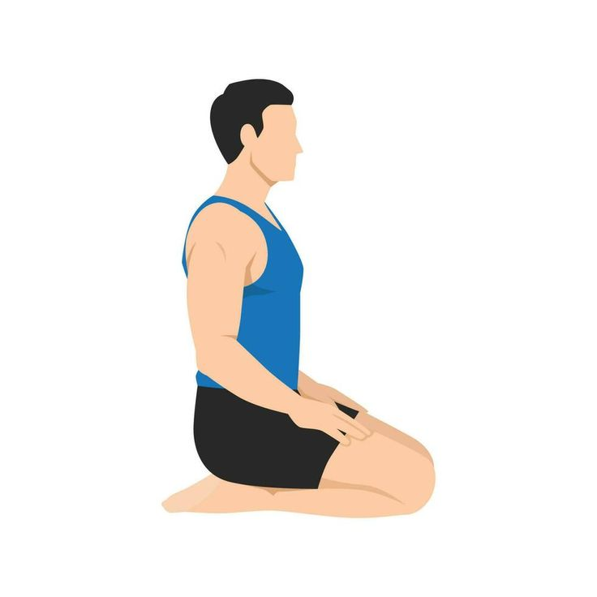
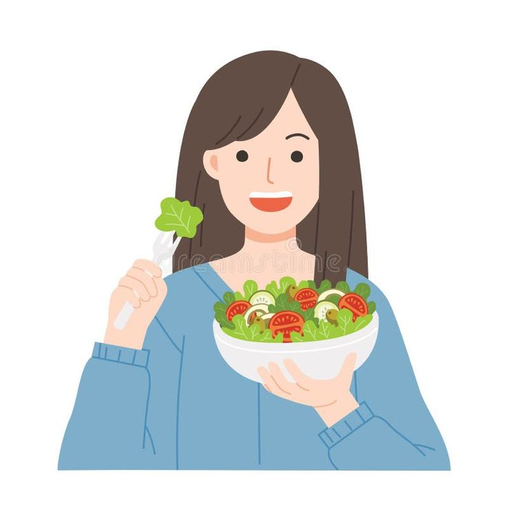

Современная жизнь полна напряженных моментов, но существуют простые методы, которые помогают сохранить спокойствие.
Глубокое дыхание помогает замедлить сердцебиение и снизить уровень кортизола — гормона стресса.
Регулярные тренировки способствуют выработке эндорфинов, улучшающих настроение.
Практики медитации и осознанности помогают концентрироваться на настоящем моменте и уменьшают тревожность.
Сбалансированный рацион, богатый витаминами и минералами, способствует улучшению психоэмоционального состояния.
